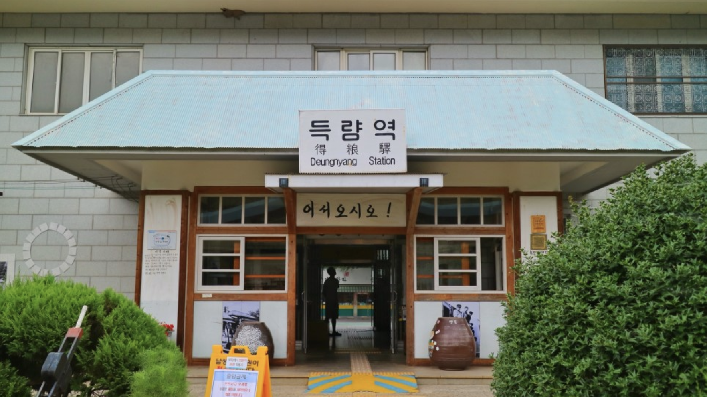
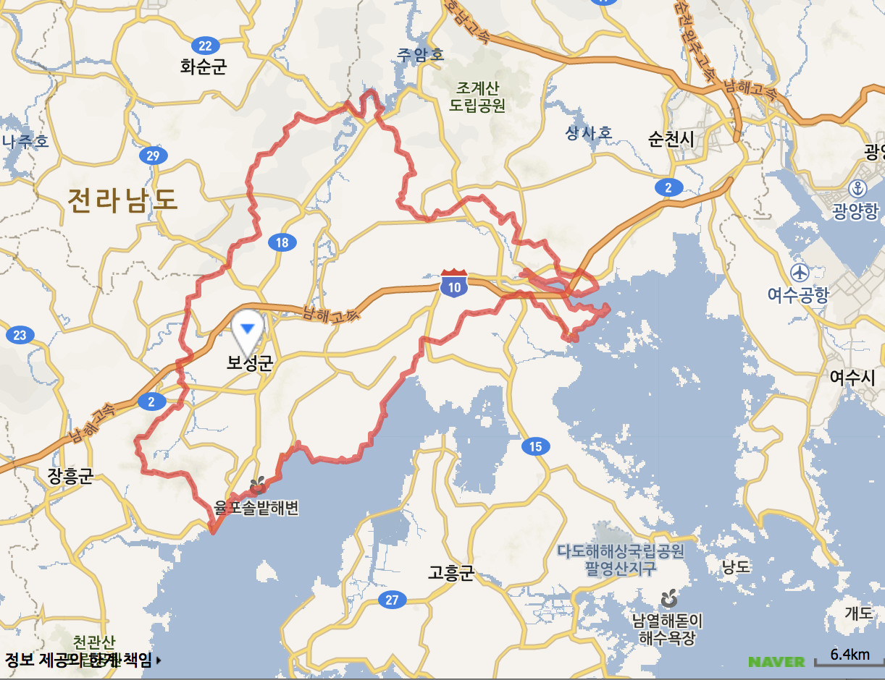
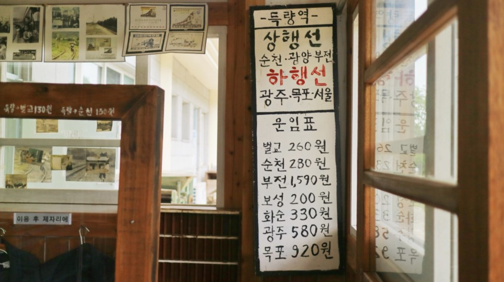
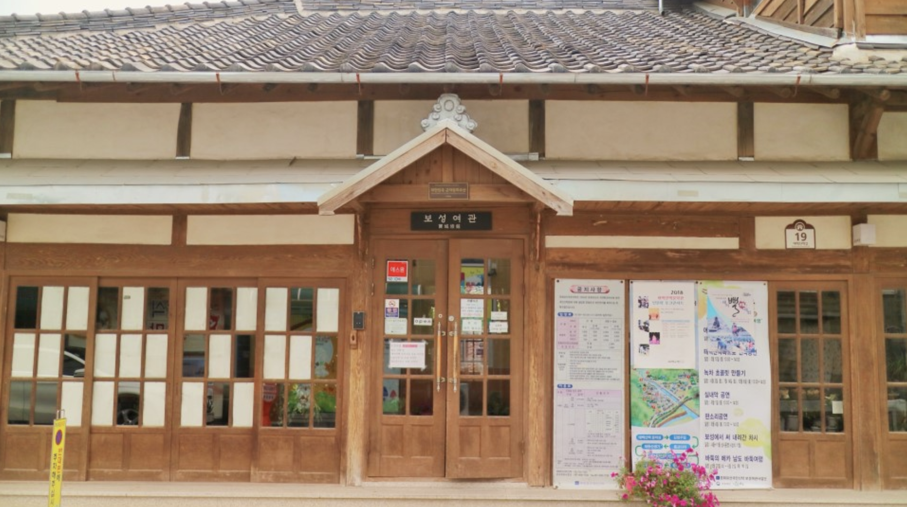
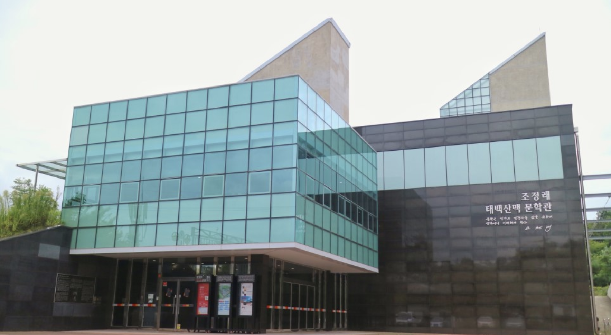

아날로그 감성 자극하는 보성
INDEX
- 전남 보성
- 아날로그 감성 명소
- 준비물
1. 전남 보성
전라남도 중앙부에 있다. 홍차, 한지, 마포로 유명하다.
보성은 대한민국 최남단인 전라남도 남부의 중앙에 위치해 산, 바다, 호수가 잘 어우러진 ‘3경 3향’의 고장이다. 제암산 등 임금 제(帝)자를 가진 명산과 청정해역인 득량·여자만, 내륙호수인 주암호의 아름다운 풍광이 조화를 이뤄 3경(景)을 연출하고 있다.예로부터 충신열사와 민족의 선각자가 많이 배출된 고장이어서 의향(義鄕)으로도 불리며, 판소리의 비조 박유전선생과 정응민 선생을 중심으로 창제된 보성소리와 채동선 선생의 민족음악 혼이 서린 예향(藝鄕)이기도 하다. 여기에 생명연장의 꿈을 이룰 수 있다고까지 하는 국내 최대 다향(茶鄕)이란 명성도 얻고 있다.
2.아날로그 감성 명소
| 이름 | 득량역 | 보성여관 | 태백산맥 문학관 | ||
|---|---|---|---|---|---|
| 사진 |  |  |  | ||
| 주소 | 전라남도 보성군 득량면 역전길 28 | 전라남도 보성군 벌교읍 태백산맥길 19 | 전라남도 보성군 벌교읍 홍암로 89-19 | ||
| 가격 | 무료 | 성인 | 1000원 | 성인 | 2000원 |
| 청소년 | 1500원 | 청소년 | 800원 | ||
| 어린이 | 500원 | 어린이 | 1000원 | ||
| 운영시간 | 항시운영 | 오전 10시 - 오후 5시 | 오전 9시 - 오전 6시 | ||
3. 준비물
참고 블로그
네이버 지식백과